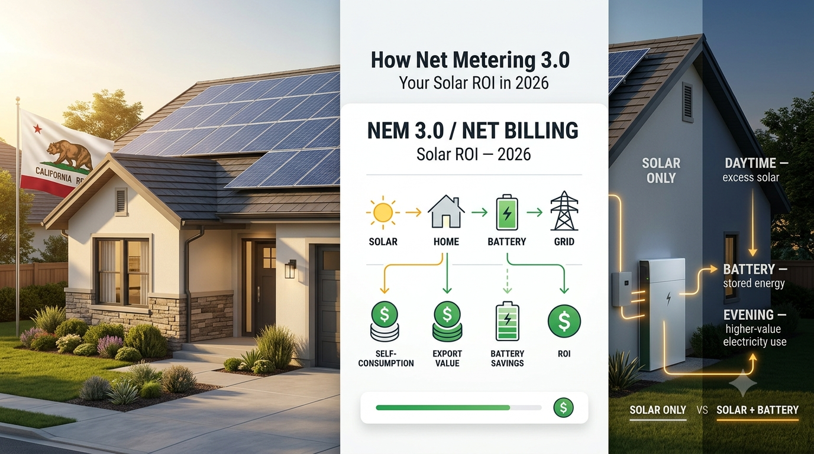

CALIFORNIA SOLAR ROI • 2026
How Net Metering 3.0 Affects Your Solar ROI in 2026

For California homeowners, the financial value of a new solar system has changed since the state moved from traditional net energy metering to the newer Net Billing Tariff (NBT), commonly called NEM 3.0 or the Solar Billing Plan.
Since April 15, 2023, customers applying for interconnection have generally been placed on the NBT. Under the current structure, excess electricity exported to the grid is compensated based on its value to the grid rather than simply receiving the homeowner's full retail electricity rate. See the California Public Utilities Commission's NEM information.
What Is NEM 3.0?
California's current Net Billing Tariff is the successor to NEM 2.0. The CPUC says onsite solar generation first serves onsite loads, while exported generation receives Energy Export Credits based on values that reflect the grid's value of that electricity. Those export values are usually lower than retail import rates, although they can be higher during certain late-summer evening periods. California Public Utilities Commission: Net Energy Metering.
Why NEM 3.0 Changes Solar ROI
The basic financial challenge is timing. Solar production is often strongest around midday, while household electricity demand can rise in the evening after solar production falls.
With a solar-only system, excess midday electricity may be exported. With solar plus a battery, more of that energy can be stored and used later.
| Solar Only | Solar + Battery |
|---|---|
| Home uses daytime solar | Home uses daytime solar |
| Excess solar is exported | Excess solar can charge the battery |
| Evening demand may require grid electricity | Stored solar can help cover evening demand |
| Less control over timing | More control over when solar energy is used |
Why Battery Storage Matters Under NEM 3.0
The CPUC specifically says customers can maximize bill savings under the Net Billing Tariff by pairing battery storage with solar, allowing stored energy to be used or exported during higher-value periods. Read the CPUC's current NEM guidance.
A simplified energy flow looks like this:
Solar → Home → Battery → Evening Home Use
This can increase self-consumption and reduce the amount of electricity a homeowner needs to buy from the grid during periods when electricity is more expensive.
Self-Consumption Becomes More Important
Suppose a system produces 10 kWh during the day and the home immediately uses 5 kWh. The remaining 5 kWh can be exported or, when a battery is available, stored for later use. If the battery subsequently supplies energy to the home after sunset, the homeowner has shifted solar electricity from a low-demand period to a later period of household demand.
NEM 3.0 and Time-of-Use Rates
California's NBT uses specific electrification-oriented time-of-use rate schedules for the major investor-owned utilities. The exact schedule depends on the utility, so homeowners should model their actual rate rather than using a generic national electricity price. Check current California NEM information.
Smart battery controls can use rate schedules, solar forecasts, household demand and battery state of charge to decide when stored electricity should be used. The best strategy depends on the customer's tariff and equipment.
How Much Does Battery Storage Cost?
Battery prices vary by equipment, capacity, installation, electrical upgrades and location. A homeowner should compare the complete installed solar-plus-storage proposal rather than assuming a single battery price represents the total project cost.
How to Calculate Solar + Battery ROI
A simple annual ROI calculation is:
Annual net savings ÷ total system investment = simple annual ROI
For the battery portion, compare the additional value created by storage against its incremental cost:
Battery value = avoided grid purchases + eligible export value − additional battery costs
Real-world calculations should also consider battery efficiency, degradation, financing, incentives, maintenance and the expected life of the equipment.
Is a Battery Always Worth It?
No. A battery may be less attractive for a home with very low electricity use, little evening demand, a high battery installation cost or a tariff that provides limited value from energy shifting. It can be more attractive when a home exports substantial daytime solar, has significant evening demand, faces expensive imports or values outage protection.
Battery Storage Provides More Than Bill Savings
- Backup power: A properly configured battery can provide backup during grid outages.
- Higher solar self-consumption: Excess daytime production can be stored for later.
- Energy timing: Stored energy can be used when solar production is unavailable.
- Smart control: Modern systems can automatically respond to tariffs, forecasts and household demand.
Does NEM 3.0 Mean Solar Is No Longer Worth It?
No. It means the economics have changed. The older model placed more emphasis on exporting excess solar for retail-rate credits. The newer structure makes self-consumption, storage and energy timing more important for many new California customers.
How to Evaluate Your Own Solar ROI
Ask installers to provide two scenarios: solar only and solar plus battery. Compare total installed cost, annual production, self-consumption, exports, grid purchases, export compensation, battery degradation, financing, incentives and backup capability.
The key number is not simply the battery's purchase price. It is the additional value the battery creates compared with solar alone.
Final Takeaway
California's NEM 3.0, officially the Net Billing Tariff, changed the economics of new residential solar by making export compensation different from retail electricity rates. The CPUC says battery storage can help customers maximize bill savings by shifting solar energy into higher-value periods. Learn more from the California Public Utilities Commission.
For a California homeowner in 2026, the important question is not only how many solar panels to install, but how much solar electricity should be used immediately, stored for later and exported.
Always verify current utility rules, equipment pricing, incentives and installer projections before making a solar investment.